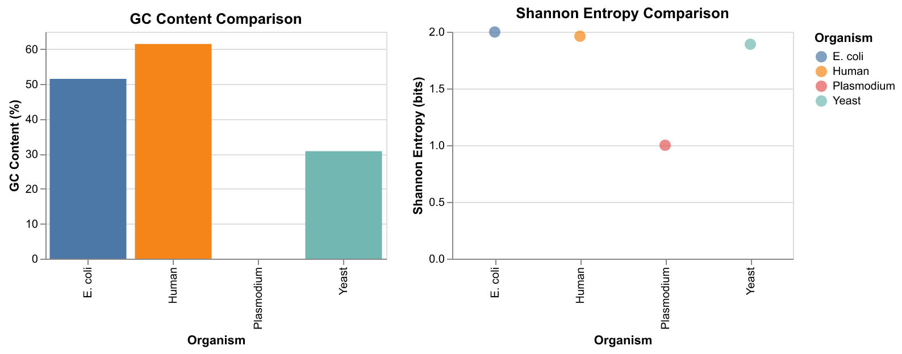

# Store a DNA sequence as a string variable
dna = "ATGCGATCGATCGATCGATCGATCG"
# Display the sequence
dna'ATGCGATCGATCGATCGATCGATCG'

This lecture demonstrates concepts from Think Python chapters 1-3 using biological data.
In Python, we can represent a DNA sequence as a string—a sequence of characters. Let’s start with a short sequence from the E. coli genome:
# Store a DNA sequence as a string variable
dna = "ATGCGATCGATCGATCGATCGATCG"
# Display the sequence
dna'ATGCGATCGATCGATCGATCGATCG'We can use built-in functions to learn about our sequence:
# What type of data is this?
print(type(dna))
# How long is the sequence?
print(len(dna))<class 'str'>
25We can concatenate (join) strings using + and repeat them using *:
# Concatenation: joining two sequences
upstream = "TATAAA" # A promoter motif
gene = "ATGCGATCG" # Start of a gene
full_sequence = upstream + gene
print("Full sequence:", full_sequence)
# Repetition: creating a poly-A tail
poly_a_tail = "A" * 20
print("Poly-A tail:", poly_a_tail)Full sequence: TATAAAATGCGATCG
Poly-A tail: AAAAAAAAAAAAAAAAAAAAA fundamental task in sequence analysis is counting how many of each nucleotide (A, T, G, C) appear in a sequence. We can use the .count() method:
# A longer sequence to analyze
dna = "ATGCGATCGATCGATCGATCGATCGAATTCCGGAATTCCGG"
# Count each nucleotide
a_count = dna.count('A')
t_count = dna.count('T')
g_count = dna.count('G')
c_count = dna.count('C')
print("A:", a_count)
print("T:", t_count)
print("G:", g_count)
print("C:", c_count)A: 10
T: 10
G: 11
C: 10The total of all nucleotides should equal the sequence length. Let’s use arithmetic operators to verify:
# Sum of all counts
total = a_count + t_count + g_count + c_count
print("Sum of counts:", total)
print("Sequence length:", len(dna))
print("Match:", total == len(dna))Sum of counts: 41
Sequence length: 41
Match: TrueGC content is the percentage of nucleotides that are either G or C. This is biologically important because: - Higher GC content = more stable DNA (3 hydrogen bonds vs 2 for AT) - GC content varies between species and genomic regions - Used in gene prediction and genome analysis
Formula: GC% = (G + C) / total × 100
# Calculate GC content
gc_count = g_count + c_count
gc_percent = gc_count / len(dna) * 100
print("GC content:", gc_percent, "%")GC content: 51.21951219512195 %We can use round() to clean up the output:
# Round to 1 decimal place
gc_percent_rounded = round(gc_percent, 1)
print("GC content:", gc_percent_rounded, "%")GC content: 51.2 %The print() function can take multiple arguments, separated by spaces:
# Print multiple values
print("Sequence has", len(dna), "nucleotides with", gc_percent_rounded, "% GC content")Sequence has 41 nucleotides with 51.2 % GC contentPython’s math module provides mathematical functions. We can use it to calculate Shannon entropy—a measure of sequence complexity from information theory.
import math
# The math module provides constants like pi
print("Pi =", math.pi)
# And functions like sqrt and log
print("Square root of 16:", math.sqrt(16))
print("Log base 2 of 8:", math.log2(8))Pi = 3.141592653589793
Square root of 16: 4.0
Log base 2 of 8: 3.0Shannon entropy measures how “random” or “complex” a sequence is. A sequence with equal proportions of A, T, G, C has maximum entropy (2 bits), while a sequence of all A’s has entropy of 0.
Formula: H = -Σ p(x) × log₂(p(x))
# Calculate frequencies (proportions)
freq_a = a_count / len(dna)
freq_t = t_count / len(dna)
freq_g = g_count / len(dna)
freq_c = c_count / len(dna)
print("Frequencies:")
print("A:", round(freq_a, 3))
print("T:", round(freq_t, 3))
print("G:", round(freq_g, 3))
print("C:", round(freq_c, 3))Frequencies:
A: 0.244
T: 0.244
G: 0.268
C: 0.244# Calculate entropy (handling the case where frequency is 0)
entropy = 0
for freq in [freq_a, freq_t, freq_g, freq_c]:
if freq > 0: # log(0) is undefined
entropy = entropy - freq * math.log2(freq)
print("Shannon entropy:", round(entropy, 3), "bits")
print("Maximum possible:", 2.0, "bits")Shannon entropy: 1.999 bits
Maximum possible: 2.0 bitsA function is a reusable block of code. Let’s create a function to calculate GC content so we can easily apply it to any sequence:
def gc_content(sequence):
"""
Calculate GC content as a percentage.
Args:
sequence: A DNA sequence string
Returns:
GC content as a percentage (0-100)
"""
g = sequence.count('G')
c = sequence.count('C')
return (g + c) / len(sequence) * 100Let’s break down the function: - def gc_content(sequence): — defines the function name and parameter - The docstring ("""...""") explains what the function does - The body is indented (4 spaces) - return specifies what value the function gives back
# Test the function with different sequences
print("Test 1:", gc_content("ATGCATGC")) # 50%
print("Test 2:", gc_content("GGGGCCCC")) # 100%
print("Test 3:", gc_content("AAAATTTT")) # 0%Test 1: 50.0
Test 2: 100.0
Test 3: 0.0Now let’s create a function for Shannon entropy—wrapping our earlier calculation into a reusable form:
def shannon_entropy(sequence):
"""
Calculate Shannon entropy of a DNA sequence.
Args:
sequence: A DNA sequence string
Returns:
Entropy in bits (0 to 2 for DNA)
"""
length = len(sequence)
entropy = 0
for nucleotide in ['A', 'T', 'G', 'C']:
count = sequence.count(nucleotide)
if count > 0:
freq = count / length
entropy = entropy - freq * math.log2(freq)
return entropy# Test the entropy function
print("Test 1 (balanced):", round(shannon_entropy("ATGC"), 3)) # 2.0 - max entropy
print("Test 2 (all A's):", round(shannon_entropy("AAAA"), 3)) # 0.0 - min entropy
print("Test 3 (AT only):", round(shannon_entropy("AATTAATT"), 3)) # 1.0 - half maxTest 1 (balanced): 2.0
Test 2 (all A's): 0.0
Test 3 (AT only): 1.0A for loop lets us examine each character in a sequence one at a time. Let’s implement our own nucleotide counter to understand what .count() does internally:
# Print each nucleotide
short_seq = "ATGC"
for nucleotide in short_seq:
print(nucleotide)A
T
G
C# Count G's manually
dna = "ATGCGATCGATCGATCG"
g_count = 0
for nucleotide in dna:
if nucleotide == 'G':
g_count = g_count + 1
print("Number of G's:", g_count)
print("Verify with .count():", dna.count('G'))Number of G's: 5
Verify with .count(): 5Let’s create a more flexible counting function that takes both the sequence and the target nucleotide as parameters:
def count_nucleotide(sequence, target):
"""
Count occurrences of a nucleotide in a sequence.
Args:
sequence: A DNA sequence string
target: The nucleotide to count ('A', 'T', 'G', or 'C')
Returns:
The count of the target nucleotide
"""
count = 0
for nucleotide in sequence:
if nucleotide == target:
count = count + 1
return count# Test our function
dna = "ATGCGATCGATCGATCG"
print("A count:", count_nucleotide(dna, 'A'))
print("T count:", count_nucleotide(dna, 'T'))
print("G count:", count_nucleotide(dna, 'G'))
print("C count:", count_nucleotide(dna, 'C'))A count: 4
T count: 4
G count: 5
C count: 4We can build more complex functions by combining simpler ones. Let’s rewrite gc_content to use our count_nucleotide function:
def gc_content_v2(sequence):
"""
Calculate GC content using our count_nucleotide function.
"""
g = count_nucleotide(sequence, 'G')
c = count_nucleotide(sequence, 'C')
total = len(sequence)
return (g + c) / total * 100
# Test it
print("GC content:", gc_content_v2("ATGCGATCGATCGATCG"))GC content: 52.94117647058824Variables created inside a function are local—they only exist within that function:
def demo_function():
local_var = "I only exist inside this function"
print("Inside function:", local_var)
demo_function()
# This would cause an error:
# print(local_var) # NameError: name 'local_var' is not definedInside function: I only exist inside this functionLet’s compare GC content across sequences from different organisms:
# Sample sequences (promoter regions)
sequences = [
("E. coli", "ATGCGATCGATCGATCGATCGATCGAATTCCGG"),
("Yeast", "ATATATATGCATGCATATATGCATGC"),
("Human", "GCGCGCATATATGCGCGCATATGCGC"),
("Plasmodium", "ATATATATATATATATATATATAT"), # Malaria parasite - very AT-rich
]# Analyze each sequence
print("GC Content Comparison")
print("=" * 40)
for name, seq in sequences:
gc = gc_content(seq)
print(name + ":", round(gc, 1), "%")GC Content Comparison
========================================
E. coli: 51.5 %
Yeast: 30.8 %
Human: 61.5 %
Plasmodium: 0.0 %The range() function generates a sequence of numbers, useful when you need to count:
# Count from 0 to 4
for i in range(5):
print("Number:", i)Number: 0
Number: 1
Number: 2
Number: 3
Number: 4# Calculate GC content in sliding windows
dna = "ATGCGCGCATATATATGCGCGCATATATAT"
window_size = 10
print("Position\tGC%")
for i in range(len(dna) - window_size + 1):
window = dna[i:i + window_size]
gc = gc_content(window)
print(i, "\t", round(gc, 1))Position GC%
0 60.0
1 60.0
2 60.0
3 50.0
4 40.0
5 30.0
6 20.0
7 20.0
8 20.0
9 30.0
10 40.0
11 50.0
12 60.0
13 60.0
14 60.0
15 60.0
16 60.0
17 50.0
18 40.0
19 30.0
20 20.0To create charts, we need two libraries: - Pandas — for organizing data into tables (DataFrames) - Altair — for creating visualizations
import altair as alt
import pandas as pdThe as keyword creates a shorter alias: instead of writing altair.Chart(...), we can write alt.Chart(...).
Before we can plot, we need to organize our results. We’ll build a list of dictionaries where each dictionary represents one row of data:
# Start with an empty list
data = []
# Loop through each organism and its sequence
for name, seq in sequences:
# Create a dictionary for this organism
row = {
"Organism": name,
"GC Content (%)": round(gc_content(seq), 1),
"Shannon Entropy (bits)": round(shannon_entropy(seq), 3)
}
# Add it to our list
data.append(row)
# Look at what we built
data[{'Organism': 'E. coli',
'GC Content (%)': 51.5,
'Shannon Entropy (bits)': 1.998},
{'Organism': 'Yeast', 'GC Content (%)': 30.8, 'Shannon Entropy (bits)': 1.89},
{'Organism': 'Human',
'GC Content (%)': 61.5,
'Shannon Entropy (bits)': 1.961},
{'Organism': 'Plasmodium',
'GC Content (%)': 0.0,
'Shannon Entropy (bits)': 1.0}]Each dictionary has the same keys ("Organism", "GC Content (%)", "Shannon Entropy (bits)"), which will become column names.
A DataFrame is a table—like a spreadsheet. Pandas can convert our list of dictionaries directly into a DataFrame:
# Convert list of dictionaries to a DataFrame
df = pd.DataFrame(data)
df| Organism | GC Content (%) | Shannon Entropy (bits) | |
|---|---|---|---|
| 0 | E. coli | 51.5 | 1.998 |
| 1 | Yeast | 30.8 | 1.890 |
| 2 | Human | 61.5 | 1.961 |
| 3 | Plasmodium | 0.0 | 1.000 |
Altair uses a declarative approach: you describe what you want, not how to draw it: - alt.Chart(df) — use this DataFrame - .mark_bar() — draw bars - .encode(x=..., y=...) — map columns to visual properties
# GC Content bar chart
gc_chart = alt.Chart(df).mark_bar().encode(
x="Organism",
y="GC Content (%)",
color="Organism"
).properties(
title="GC Content Comparison",
width=300,
height=200
)# Shannon Entropy chart
se_chart = alt.Chart(df).mark_circle(size=100).encode(
x="Organism",
y="Shannon Entropy (bits)",
color="Organism"
).properties(
title="Shannon Entropy Comparison",
width=300,
height=200
)Let’s put them together:
# Combine charts side by side and display
combined = gc_chart | se_chart
# Display as PNG (works in all environments)
import tempfile
from IPython.display import Image
with tempfile.NamedTemporaryFile(suffix='.png', delete=False) as f:
combined.save(f.name, scale_factor=2)
display(Image(f.name))